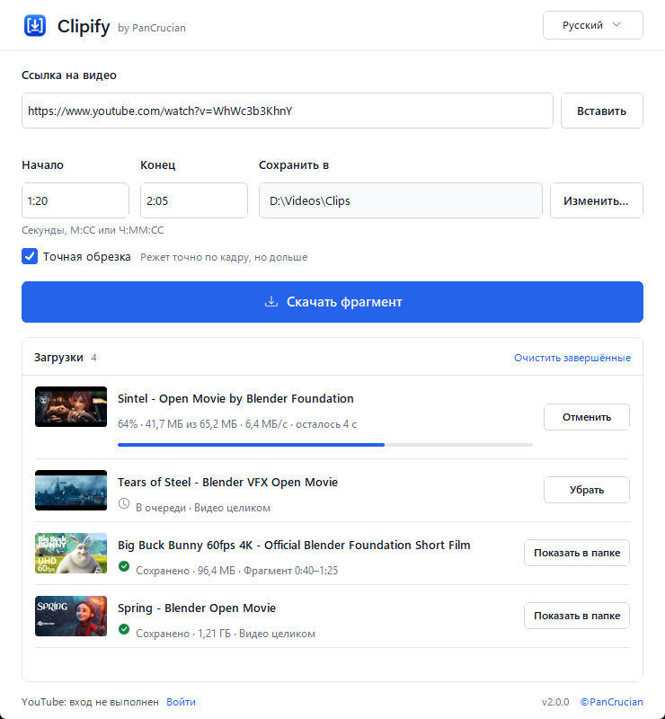

Скачивайте видео с YouTube целиком или только нужный фрагмент
Вставьте ссылку, укажите начало и конец, нажмите «Скачать». Clipify сохранит фрагмент в лучшем доступном качестве. Бесплатно для Windows и macOS, без установки.
Версия 2.0.0 · Windows 10/11 (64-бит) · macOS 11 и новее · ZIP, без установщика

Фрагмент за три шага
Никаких настроек: вся работа помещается в одно окно.
Вставьте ссылку
Скопируйте адрес видео в браузере и нажмите Вставить.
Укажите время
Введите начало и конец в секундах, М:СС или Ч:ММ:СС. Оставьте пустыми, чтобы скачать всё видео.
Скачайте
Нажмите Скачать фрагмент. Когда в строке появится «Сохранено», кнопка Показать в папке откроет файл.
Всё, что нужно для скачивания фрагментов
Работает на yt-dlp и FFmpeg, а разобраться в нём может любой.
- Только нужная часть
- Clipify скачивает только отрезок между началом и концом, а не всё видео.
- Точная обрезка
- Начало и конец точно по кадру, когда это важно. Обработка займёт больше времени.
- Лучшее доступное качество
- Берёт лучшие видео и звук YouTube и соединяет их в один файл, обычно MP4 или WebM.
- Очередь, где видно всё
- Добавляйте несколько ссылок. В каждой строке видны прогресс, размер, скорость и оставшееся время; любую загрузку можно отменить или повторить.
- Ничего не перезаписывается
- При совпадении имени создаётся копия с номером. Неудобные символы и длинные названия превращаются в безопасные имена файлов.
- Вход, только если просит YouTube
- Для проверки на бота, возраста или приватных видео, к которым вам открыли доступ, войдите один раз в отдельном окне браузера. Пароль остаётся у Google.
- Без установки
- Не нужны установщик, Python и FFmpeg. Распакуйте и запустите; настройки хранятся рядом с программой.
- Два языка, две темы
- Русский и английский, светлая и тёмная тема, как в вашей системе.
Вопросы
Как скачать только часть видео с YouTube?
Вставьте ссылку в Clipify, укажите начало и конец (например, 1:20 и 2:05) и нажмите «Скачать фрагмент». Clipify скачает только этот отрезок. Включите «Точную обрезку», если фрагмент должен начинаться и заканчиваться точно по кадру.
Clipify бесплатный?
Да: без рекламы, платных функций и регистрации. Исходный код опубликован на GitHub.
Нужно ли что-то устанавливать?
Нет. Скачайте ZIP для своей системы, распакуйте и запустите Clipify. Всё необходимое уже внутри архива.
Куда сохраняются видео?
В папку Clipify, если не выбрать другую кнопкой «Изменить…». Выбранную папку Clipify запоминает.
Почему YouTube просит войти?
YouTube иногда просит подтвердить, что вы не бот, проверяет возраст или открывает видео только определённым аккаунтам. Нажмите «Войти» внизу окна и войдите в Google в отдельном окне браузера. Clipify сохранит только сессию YouTube в файле рядом с программой, а пароль останется у Google.
macOS пишет, что Clipify нельзя открыть
Сборки для macOS не подписаны Apple. Откройте «Системные настройки → Конфиденциальность и безопасность» и нажмите «Всё равно открыть» рядом с сообщением о Clipify.
Скачать Clipify
Бесплатно для Windows 10/11 и macOS 11 и новее.